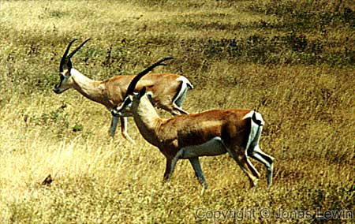

Grant's Gazelle.
| The larger gazelle of the two most visible in Serengeti: The Thomson Gazelle and Grant's Gazelle. The easiest way I had to tell them apart was the black stripe on the Thomson gazelle, and the antlers (the horns) are larger on Grant's gazelle. |